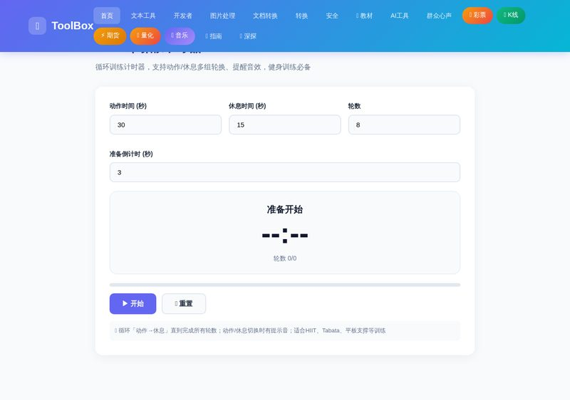
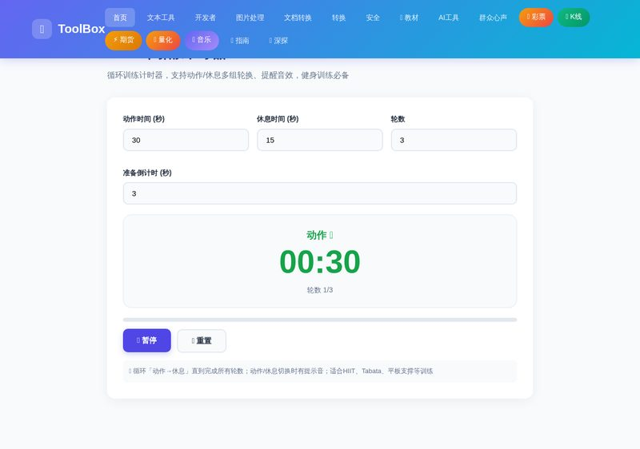

做 HIIT、Tabata、平板支撑或循环训练时，最难的不是动作本身，而是记住什么时候该动、什么时候该停。HIIT间隔计时器 帮你把「动作 → 休息」的循环自动跑起来，到点自动切换并发出提示音，练完都不用盯着秒表。

打开「趣味工具」分类里的「⏱️ HIIT间隔计时器」。设置动作时间（每组训练秒数）、休息时间（组间休息秒数，可设 0 表示不休息）、轮数（总共循环多少次），以及可选的准备倒计时（开始前的缓冲时间）。
点击「▶️ 开始」。先进入准备倒计时，随后进入「动作 💪」阶段，大号数字实时倒计时并显示当前轮数；时间过半后自动切到「休息 😌」（蓝色），进度条同步显示每阶段完成比例。切换时有提示音提醒。

训练中可随时点击「⏸️ 暂停」休息一下，「🔄 重置」重新开始。所有轮数完成后会播放完成提示并显示「🎉 完成！」。全程纯本地运行，不需要联网。
点击「⏸️ 暂停」随时停下，调整上方参数后再点「▶️ 继续」，计时会以新参数继续。
请确认设备音量已打开且未静音；浏览器可能需要在开始前完成一次交互（点击按钮）才能播放声音，点击「开始」即满足。
可以。休息为 0 时动作结束后直接进入下一轮，适合连续组（如波比跳连续挑战）场景。